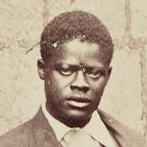
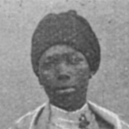
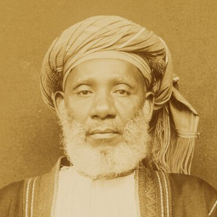

![Tree segment with faded inscription on inner bark that begins “Dr. Livignston[e] / May 4, 18[73].”](img/main-pages/liv_020014_0001_deriv-1020px.jpg "Detail from Weatherly Poulett and [Jacob Wainwright], “Dr. Livingstone, May 4 1873; Inscription Carved by African Youths on the Tree in Central Africa at the Foot of Which Livingstone’s Heart Was Buried” (Photograph, c.1895-1896), no. 561464i, Wellcome Library, London. Copyright Wellcome Library, London. Creative Commons Attribution 4.0 International (https://creativecommons.org/licenses/by/4.0/).")
One More Voice
Lost Voices from the British Empire's Archives
Critically-Edited Archival Texts
Overview top
One More Voice publishes a selection of critically-edited and encoded archival texts (manuscripts and periodical press articles) alongside a set of curated historical objects. Each edited text and object is presented in a form ready for educational use, as noted on our home page. Additionally, the project helps contextualize these primary materials by providing an extended list of Victorian-era, book-length published works by non-European authors (mostly Anglophone) and a small collection of relevant motion pictures.
Each entry below provides dates for the non-European individual of interest, a link to the corresponding Wikipedia entry (if available), a short biographical statement, and links to one or more archival items published by One More Voice. For each archival item, the entry provides the names of any British or other European co-creators and information on the material format of the item, including description of any layers of third-party remediation involved in the item's production. Finally, each entry also includes an image of the given creator or, if no image is known, the entry explictly marks the gap in the historical record with an empty image frame.
The archival texts are available for viewing online in facsimile versions that approximate the textual, structural, and material characteristics of the originals. Users can also download corresponding TEI XML files for all critically-edited archival texts from the One More Voice GitHub repo. Emphasis on materiality in the facsimiles seeks to establish a degree of continuity between the originals and their digital surrogates. This strategy of representation – alongside the overall format of the entries – is also rooted in an ethos of care that recognizes the individuality of each creator and seeks to overturn long-standing practices in western discourse of minimizing, eliding, or otherwise failing to acknowledge the work of such non-European creators.
Authors & Contributors top
Selim Aga top
c.1826-1875 | Wikipedia
No
known
image
Biography: Formerly enslaved person and traveler from Kordofan, Sudan; accompanied British explorer Richard Burton as a valet on various West African journeys in the 1860s; produced accounts of his life and travels.
Incidents Connected with the Life of Selim Aga
Dates(s): 1846
Format: Self-published narrative in book form
Dates(s): 24 June 1858, 25 September 1858
Co-Creator(s): Anonymous
Format: Original letters, as combined, edited, and published in a British periodical
“Original Correspondence: West Africa”
Dates(s): 16 November 1863, 1 February 1864
Co-Creator(s): Louis-Alexis Chamerovzow
Format: Original letter, as edited, contextualized, and published by a British writer in a British abolitionist periodical
Mohammed Bogharib top
Dates unknown
No
known
image
Biography: Swahili trader and formerly enslaved person; traveled widely in nineteenth-century East and Central Africa; although known for the violence of his followers, notably assisted explorer David Livingstone during the latter's final travels in Africa (1866-73).
“History of Warori or Basango”
Dates(s): 16 July 1869
Co-Creator(s): David Livingstone
Format: Original narrative, as translated (possibly with the help of an intermediary) and written down in a notebook by a British explorer
Andries Botha top
Dates unknown | Wikipedia
 Biography: Gonaqua Khoe and appointed colonial official in South Africa's Kat River Settlement; served with British and Cape colonial forces against the amaXhosa in Hintsa's War (1834-35) and the War of the Axe (1846-47).
Biography: Gonaqua Khoe and appointed colonial official in South Africa's Kat River Settlement; served with British and Cape colonial forces against the amaXhosa in Hintsa's War (1834-35) and the War of the Axe (1846-47).
Dates(s): 23 June 1850
Co-Creator(s): Anonymous
Format: Handwritten copy of manuscript letter
Dates(s): 2020
Author(s): Jared McDonald
James Chumah top
1834-1906 | Wikipedia | Also see: Historical Objects and Home Page (header image)
 Biography: Traveler from the Yao of East Africa; formerly enslaved person who accompanied explorer David Livingstone on his final travels (1866-73); provided Horace Waller, editor of Livingstone's posthumous journals, with information related to those travels.
Dates(s): 9 April 1874, [1874], [1874]
Co-Creator(s): Horace Waller; Lindesay Brine
Format: Original letter, as edited and published (alongside a letter by another British author) in a letter by a British abolitionist in a British periodical
Frederick Douglass top
1818-1895 | Wikipedia
 Biography: Abolitionist and civil rights activist; drew on his skills as a writer and orator and on his story as a formerly enslaved person to become one of the most renowned and politically influential Black Americans of the nineteenth century.
Biography: Abolitionist and civil rights activist; drew on his skills as a writer and orator and on his story as a formerly enslaved person to become one of the most renowned and politically influential Black Americans of the nineteenth century.
Dates(s): 9 May 1846
Format: Manuscript letter in author’s hand
Dates(s): 9 July 1888
Format: Manuscript letter in author’s hand
Sui Sin Far top
1865-1914 | Also Edith Maude Eaton | Dictionary of Canadian Biography | Wikipedia | Also see: Historical Objects and Book-Length Works
 Biography: Chinese-Canadian author and journalist; daughter of a formerly enslaved Chinese mother and a British father; sister of recognized author Onoto Watanna; wrote widely, with her work focused on exploring and documenting the Chinese experience in North America.
Biography: Chinese-Canadian author and journalist; daughter of a formerly enslaved Chinese mother and a British father; sister of recognized author Onoto Watanna; wrote widely, with her work focused on exploring and documenting the Chinese experience in North America.
Bonus Texts: Original Correspondence (New York Public Library site)
Dates(s): 1903-1907
Co-Creator(s): Various
Format: Correspondence collection that includes manuscript letters in author's hand and typewritten letters with signature in author's hand
Caras Farrar top
?-c.1906
No
known
image
Biography: Traveler from the Yao of East Africa; accompanied explorer David Livingstone during the last two years (1872-73) of the latter's final African journey.
“The History of Caras Farrar of Finding Dr Livingstone, in Central Africa”
Dates(s): 9 September 1874
Co-Creator(s): Anonymous
Format: Manuscript narrative in another hand with signature in author's hand
Apolo Kagwa top
1864-1927 | Wikipedia | Also see: Historical Objects and Book-Length Works
 Biography: Served as the chief minister (Katikiro) of Buganda (now part of Uganda) for over thirty years; also a prominent intellectual, ethnographer, and author.
Biography: Served as the chief minister (Katikiro) of Buganda (now part of Uganda) for over thirty years; also a prominent intellectual, ethnographer, and author.
“The Katikiro of Uganda and His Secretary”
Dates(s): 1906
Co-Creator(s): Benjamin Stone
Format: Verbal quotations, as included in a section of a book by a British author
Semane Setlhoko Khama top
1881-1937 | Wikipedia | Also see: Historical Objects (including header image)
 Biography: Queen or queen mother (“mohumagadi”) of the BaNgwato people of the Bechuanaland Protectorate (now Botswana); played a regional key role in promoting Christianity, advocating for temperance and women's education, and expanding the role of women in the church.
Biography: Queen or queen mother (“mohumagadi”) of the BaNgwato people of the Bechuanaland Protectorate (now Botswana); played a regional key role in promoting Christianity, advocating for temperance and women's education, and expanding the role of women in the church.
Dates(s): 5 December 1934
Format: Typewritten letter with signature in author's hand
Philip Cohen Labatt top
1823-1854 | Also see: Book-Length Works
No
known
image
Biography: Jamaican-Jewish writer and editor from Kingston, Jamaica, founded The Echo, a weekly periodical and contributed to The First Fruits of the West; and, Monthly Jewish Magazine (1844) before serving as editor of the Daily Gleaner, a prominent Jamaican newspaper still published today.
“Curgy’s Funeral, Or The Old Time Busha”
Dates(s): 1855
Format: Short story, as published in a posthumous collection of the author's works
“An Incident in the Late Rebellion in Jamaica”
Dates(s): 1855
Format: Short story, as published in a posthumous collection of the author's works
Lief Ben Saeid | Thomas Wogga top
(Lief) Dates unknown | (Wogga) Dates unknown
No
known
image
Biography: (Lief) Arab trader who traveled in nineteenth-century East Africa.
No
known
image
Biography: (Wogga) African traveler and a formerly enslaved person who traveled in nineteenth-century West Africa.
Dates(s): 1845
Co-Creator(s): James MacQueen
Format: Summarized data, as published in a British periodical article by a British geographer
Menelik II top
1844-1913 | Also Sahle Mariam | Wikipedia | Also see: Historical Objects
 Biography: King of Kings and Emperor of Ethiopia (1889-1913), a role in which he expanded Ethiopia's territory and engaged in large-scale modernization in the areas of economy, education, communication, and transportation; the defeat of Italian forces by his army at the Battle of Adwa (1896) marked a key milestone in the history of African resistance to European colonialism and led Italy and other European nations to recognize Ethiopia's independence.
Biography: King of Kings and Emperor of Ethiopia (1889-1913), a role in which he expanded Ethiopia's territory and engaged in large-scale modernization in the areas of economy, education, communication, and transportation; the defeat of Italian forces by his army at the Battle of Adwa (1896) marked a key milestone in the history of African resistance to European colonialism and led Italy and other European nations to recognize Ethiopia's independence.
Dates(s): 15 May 1902; 28 October 1902; 1905
Co-Creator(s): Edward VII; John Lane Harrington; Federico Ciccodicola; Victor Emmanuel III
Format: Treaty drafted with British and Italian representatives and signed in Ethiopia, as as edited by two British individuals and published in a book by a British publisher
Moshoeshoe • Nehemiah top
(Moshoeshoe) c.1786-1870 | Wikipedia | Also see: Historical Objects • (Nehemiah) Dates unknown
 Biography: (Moshoeshoe) Son of a minor chief of the Koena clan of Southern Africa's Basotho people; rose to prominence as a strategic leader, diplomat, and military tactician; became the first king of Basutoland (modern-day Lesotho) in 1822.
Biography: (Moshoeshoe) Son of a minor chief of the Koena clan of Southern Africa's Basotho people; rose to prominence as a strategic leader, diplomat, and military tactician; became the first king of Basutoland (modern-day Lesotho) in 1822.
No
known
image
Biography: (Nehemiah) Moshoeshoe's son.
Dates(s): 5 October 1855, 22 January 1856
Co-Creator(s): Anonymous; Jacobus Nicolaas Boshoff; Thomas Arbousset; George Grey
Format: Discussion with Dutch South African interlocutor and a British colonial official, as translated by a French interpreter and as edited and published in a British periodical
Ncwadi top
Dates unknown
No
known
image
Biography: Nineteenth-century leader (“ngkosi”) of the amaNgwane, a clan of the Zulu in South Africa.
“Gleanings and Glances” (excerpt), “Letter from an African Chief”
Dates(s): 12 June 1893, 1 June 1894
Co-Creator(s): Anonymous
Format: Original letter, as edited and published in a British missionary periodical
Nehemiah top
See entry for Moshoeshoe • Nehemiah
top
c.1778-1861 | Also Ranavalo-Manjaka I | Wikipedia | Also see: Historical Objects
 Biography: Queen of Madagascar from 1828-61; known for policies that opposed the influence of European politics and culture.
Biography: Queen of Madagascar from 1828-61; known for policies that opposed the influence of European politics and culture.
“The Late Mr. James Cameron of Madagascar” (excerpt)
Dates(s): 1875, 1 March 1876
Co-Creator(s): Charles Frederick Arrowsmith Moss
Format: Funeral proclamation, as read by an anonymous representative and as transcribed, translated, and published as part of an obituary by a British writer in a British periodical
James Read, Jr. top
c.1811-1894
 Biography: Eldest son of prominent London Missionary Society missionary James Read, Sr., and close associate of Jan Tzatzoe; missionary and evangelical campaigner in the Cape Colony; vocal activist for Khoe civil rights and an influential figure in the establishment of schooling in South Africa's Kat River Settlement.
Biography: Eldest son of prominent London Missionary Society missionary James Read, Sr., and close associate of Jan Tzatzoe; missionary and evangelical campaigner in the Cape Colony; vocal activist for Khoe civil rights and an influential figure in the establishment of schooling in South Africa's Kat River Settlement.
“Kat River Mission, South Africa”
Dates(s): 9 October 1838, 1 April 1839
Co-Creator(s): Anonymous
Format: Original letter, as edited and published in a British missionary periodical
Dates(s): 23 May 1850
Format: Manuscript letter in author’s hand
Introduction to James Read, Jr.
Dates(s): 2020
Author(s): Jared McDonald
Said Bin Habib top
Dates unknown | Also see: Bibliography (header image)
No
known
image
Biography: Arab trader who traveled widely in nineteenth-century East and Central Africa.
“Narrative of Said Bin Habeeb, An Arab Inhabitant of Zanzibar”
Dates(s): 31 May 1860
Co-Creator(s): [British] Government
Format: Original narrative, as translated, written down, edited, and published in a British geographical journal
Lists of Headmen in Manyema and Urundi
Dates(s): 4 July 1869, [c.1869]
Co-Creator(s): [Unnamed Arab and African Informants?]; David Livingstone
Format: Headman list and narrative data, as translated (possibly with the help of an intermediary) and written down in a notebook by a British explorer
Central African Geographical Data
Dates(s): [c.1869]
Co-Creator(s): David Livingstone
Format: Geographical data, as translated (possibly with the help of an intermediary) and written down on a map by a British explorer
Saleh Bin Osman top
Dates unknown
 Biography: Arab traveler who worked as a personal assistant to explorer Henry M. Stanley during the Emin Pasha Relief Expedition (1886-89).
Biography: Arab traveler who worked as a personal assistant to explorer Henry M. Stanley during the Emin Pasha Relief Expedition (1886-89).
Dates(s): 12 November 1890
Co-Creator(s): E.J. Glave
Format: Testimony in manuscript form, as translated and written down by a British explorer
Dates(s): August 1891
Co-Creator(s): E.J. Glave
Format: Autobiographical narrative, as translated, written down, and published by a British explorer in collaboration with British publishers
Sechele top
c.1810-1892 | Wikipedia | Also see: Historical Objects
 Biography: Leader of the BaKwena in southern Africa; played a key regional role in extending commercial routes, spreading Christianity, and forming the Bechuanaland Protectorate.
Biography: Leader of the BaKwena in southern Africa; played a key regional role in extending commercial routes, spreading Christianity, and forming the Bechuanaland Protectorate.
Dates(s): [October 1852]
Co-Creator(s): David Livingstone
Format: Original letter, as translated, written down, and annotated by a British explorer
Statement and Attestations; “Statement of Sechele, Paramount Chief of the Bakwaina”; “The Attack on Sechele”
Dates(s): 7 May 1853, 11 May 1853; 21 April 1853, 30 April 1853; 1 December 1852.
Co-Creator(s): Samuel Edwards; Tom Thompson; Anonymous; William F. Webb
Format: Statement with two original signatures, as translated and written down by a British individual and as attested by another British individual; also appended: published version of same statement with an additional letter from a British hunter provided for context
Letter to the London Missionary Society
Dates(s): [c.1852-1853]
Co-Creator(s): Robert Moffat 1
Format: Original letter, as translated, written down, and introduced by a British missionary
Dates(s): 31 October 1865
Co-Creator(s): Robert Moffat 1
Format: Original letter, as written down and translated by a British missionary
NoSuthu Soga Jotelo | Tause top
(NoSuthu Soga Jotelo) c.1805-1877 • (Tause) Dates unknown | Also see: Historical Objects
No
known
image
Biography: (NoSuthu Soga Jotelo) Great Wife of Soga, counsellor to Ngqika (leader of the AmaGcaleka Xhosa); mother of six children, including the Tiyo Soga (ordained missionary of the United Presbyterian Church); after conversion to Christianity, lived in the Tyumi Valley at the Glasgow African Missionary Station run by William Chalmers.
 Biography: (Tause) Daughter of NoSuthu.
“Nosutu, the Mother of Soga” (excerpt)
Dates(s): October 1873, 2 March 1874
Co-Creator(s): John Cumming
Format: Original letter (NoSuthu Soga Jotelo) as dictated (to Tause), then conveyed to and translated by a British missionary and published as part of an essay in a British missionary periodical
“NoSuthu Sends Thanks – Reading Voice in A Letter”
Dates(s): 2020
Author(s): Joanne Ruth Davis
Tiyo Soga top
c.1831-1871 | Wikipedia
 Biography: First ordained Xhosa missionary to the Xhosa people in South Africa; educated at Glasgow University and ordained in the United Presbyterian Church; penned newspaper articles, letters, reports, and translations of The Pilgrim’s Progress and the Bible into Xhosa.
Biography: First ordained Xhosa missionary to the Xhosa people in South Africa; educated at Glasgow University and ordained in the United Presbyterian Church; penned newspaper articles, letters, reports, and translations of The Pilgrim’s Progress and the Bible into Xhosa.
“Jubilee of the Venerable Patriarch Brownlee”
Dates(s): 17 January 1867, 14 February 1867
Co-Creator(s): Anonymous
Format: Original speech, as edited and published as part of an article in a British periodical
Tause top
See entry for NoSuthu Soga Jotelo • Tause
Tippu Tip top
1837-1905 | Wikipedia | Also see: Historical Objects
 Biography: Arab-African ivory and slave trader who traveled widely in nineteenth-century East and Central Africa; played a major role in shaping the history of the region; supported the work of explorers like David Livingstone and Henry M. Stanley; for a time served as Governor in the Stanley Falls District of the Congo Free State.
Dates(s): 30 March 1887, 17 May 1887
Co-Creator(s): Anonymous
Format: Q&A with an anonymous interlocutor, as translated, written down, edited, contextualized, and published by an anonymous British writer in a British periodical
Jan Tzatzoe top
c.1792-1868 | Also see: Historical Objects
 Biography: Also Dyani Tshatshu; Xhosa leader who became a prize African convert of the London Missionary Society; had close connections to its missionary James Read, Sr., and his son James Read, Jr.; worked as a missionary and evangelical-humanitarian campaigner in the Cape Colony and the neighboring Xhosa chieftaincies.
Biography: Also Dyani Tshatshu; Xhosa leader who became a prize African convert of the London Missionary Society; had close connections to its missionary James Read, Sr., and his son James Read, Jr.; worked as a missionary and evangelical-humanitarian campaigner in the Cape Colony and the neighboring Xhosa chieftaincies.
“Appeal on Behalf of the Hottentots”
Dates(s): July 1837, 24 November 1837, 1 January 1838
Co-Creator(s): Anonymous; J. Monro; John Philip; James Read, Sr.
Format: Original letter, as edited and published (alongside another letter from a British missionary) in an essay in a British missionary periodical
Jacob Wainwright top
c.1851/52-1892 | Wikipedia | Also see: Archival Texts (header image), Historical Objects, and Site Map (header image)
 Biography: Traveler and explorer from the Yao of East Africa; accompanied explorer David Livingstone during the last two years (1872-73) of the latter's final African journey.
Biography: Traveler and explorer from the Yao of East Africa; accompanied explorer David Livingstone during the last two years (1872-73) of the latter's final African journey.
Addition to David Livingstone's Field Diary XVII
Dates(s): 28 April 1873
Format: Addition in author's hand to a manuscript diary by a British explorer
Inscription on the Tree at the Foot of which David Livingstone's Heart was Buried
Dates(s): 4 May 1873
Format: Original inscription in author’s hand
Dates(s): May-June 1873
Co-Creator(s): James Christie; Jacob Wainwright; A. [?] Paterson
Format: Manuscript diary in author’s hand
Letter to William O. Livingstone
Dates(s): October 1873
Format: Manuscript letter in author’s hand
Dates(s): [November 1873-February 1874]
Co-Creator(s): James Christie; Jacob Wainwright
Format: Manuscript diary in author’s hand
Dates(s): 23 May 1874
Format: Manuscript letter in author’s hand
Dates(s): 10 July 1874
Format: Manuscript letter in author’s hand
Dates(s): 1 September 1874
Format: Autobiographical narrative, as published in a British missionary periodical
Dates(s): 15 September 1875
Format: Manuscript letter in author’s hand
Letter to William Salter Price
Dates(s): 2 May 1876
Format: Manuscript letter in author’s hand
Thomas Wogga top
See entry for Lief Ben Saeid • Thomas Wogga
Unnamed Central African Informants top
No
known
image
Biography: Most likely from Manyema (today a region in the eastern part of the Democratic Republic of the Congo); assisted explorer David Livingstone during the latter's final travels in Africa (1866-73).
Dates(s): [c.1868-70]
Co-Creator(s): David Livingstone
Format: Original stories, as translated (possibly with the help of an intermediary), edited, and written down in a notebook by a British explorer
Unnamed Congo Free State Informants top
No
known
image
Biography: Conveyed their experiences of atrocities under Congo Free State officers and soldiers to Roger Casement, a British government official tasked with investigating Belgian-led conduct in the colony.
“Notes on Refugee Tribes Encountered in July 1903”
Dates(s): [1903], 1904
Co-Creator(s): Roger Casement
Format: Q&A with and statements by a series of unnamed individuals and groups from the Congo Free State, as conveyed by one or more unnamed translators from the Congo Free State to a British government officer and as edited for and published among official British government documents
Dates(s): [1903], 1904
Co-Creator(s): Roger Casement
Format: Statements by a series of unnamed individual from the Congo Free State, as conveyed by one or more unnamed translators from the Congo Free State to a British government officer and as edited for and published among official British government documents
Dates(s): [1903], 1904
Co-Creator(s): Roger Casement
Format: Statement by an unnamed individual from the Congo Free State, as conveyed by at least one unnamed translator from the Congo Free State to a British government officer and as edited for and published among official British government documents
Dates(s): [1903], 1904
Co-Creator(s): Roger Casement
Format: Q&A with a series of unnamed individuals from the Congo Free State, as conveyed by two unnamed translators from the Congo Free State to a British government officer and as edited for and published among official British government documents